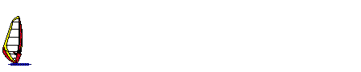

UIN 19831925
Gadu-Gadu 50514
WINDSURFER.COM.PL
Gdzie
mo¿na pojeŸdziæ -
na Œl¹sku/ Video / Kurs
windsurfingu/
/Wa¿ne
adresy/ /Kalendarium / Og³oszenia / Moje
fotki
Miejscówki
(spoty) Europejczyka / S³ownik windsurfingowy / Kobiety
foto

Kurs Windsurfingu
Wstêp do windsurfingu
Windurfing wywodzi siê oczywiœcie od surfingu, który by³
uprawiany na wyspach Pacyfiku na wiele lat zanim trafili tam
Europejczycy. W roku 1911 pisarz Jack London napisa³ o surfingu
w ksi¹¿ce "The Snark Hunt", wkrótce po tym surfing
sta³ siê popularny nie tylko na Hawajach ale i w Kalifornii.
Windsurfing wymyœlili w 1960 r. Amerykanie J.Drake i F.Payne
ju¿ po kilku latach wynalazek zawojowa³ ca³y œwiat. Dopiero w
1984 sport uzyska³ status olimpijski.
Najlepszym i najszybszym sposobem nauki windsurfingu jest wyjazd na szko³ê windsurfingow¹. Tam pod okiem instruktora i na specjalnym sprzêcie przeznaczonym do nauki p³ywania mo¿na opanowaæ podstawy. Nauka na w³asn¹ rêkê zajmuje wiêcej czasu ale tak¿e jest zabawna. Najwa¿niejsza sprawa to z³apaæ bakcyla. Nauka podstaw zajmuje zwykle tylko kilka godzin.
Do nauki windsurfingu potrzebna jest du¿a deska o d³ugoœci oko³o 3.6 m, deska wyposa¿ona jest dodatkowo w miecz. ¯agiel nie powinien przekraczaæ 5.5 mkw. Dobór sprzêtu uzale¿niony oczywiœcie jest od warunków atmosferycznych.
P³ywanie na desce wymaga podstawowej sprawnoœci fizycznej, si³a fizyczna nie jest kluczem tak naprawdê liczy siê zwinnoœæ i dobra technika. Bardzo wa¿na jest waga cia³a, jeœli jest ona zbyt du¿a to deska zamienia siê w okrêt podwodny. Nawet osobom uprawiaj¹cym windsurfing od lat zdarza siê przytyæ wówczas nawet najwiêkszy ¿agiel nie pomo¿e.
Do nauki p³ywania p³ywania zalecam zbiorniki œródl¹dowe, s¹ one bezpieczniejsze od morza a nauka trwa krócej.
Podstawowe pojêcia i technika ¿eglowania
W sk³ad sprzêt windsurfingowego wchodzi:
Kszta³ty desek i rodzaje ¿agli s¹ ró¿ne w zale¿noœci od ich przeznaczenia i ostatnich nowoœci. Decyduj¹c¹ rolê odgrywaj¹ warunki wiatrowe, dla s³abych wiatrów u¿ywane s¹ du¿e deski i du¿e ¿agle a dla mocnych wiatrów ma³e dseki i ma³e ¿agle. Powierzchnia ¿agla waha siê od 3.5 mkw do 10 mkw, najczêœciej jednak u¿ywa siê ¿agli o powierzchni od 5 do 7 mkw. D³ugoœæ desek kszta³tuje siê w przedziale od 2.0 do 3.6 m, najczêœciej u¿ywane s¹ deski o d³ugoœci od 2.8 do 3.2 m.
Przed rozpoczêciem p³ywania czeka nas otaklowanie, czyli za³o¿enie ¿agla - pamiêtajmy ¿eby uczyniæ to starannie. Aby opanowaæ p³ywanie w stopniu podstawowym musimy nauczyæ siê stawiaæ ¿agiel, wykonywaæ zwrot na wiatr oraz z wiatrem. Jeœli opanujemy zwroty to mo¿emy p³yn¹æ w dowolnym kierunku.
Kierunki ¿eglowania:
- pó³wiatr - kierunek prostopad³y do kierunku wiatru, naj³atwiejszy,
- baksztag - ukoœny kierunek ¿eglowania z wiatrem, najszybszy,
- fordewind- wiatr wieje nam w plecy,
- bejdewind - ukoœny kierunek pod wiatr.
Bezpieczeñstwo
P³ywanie na desce niesie ze sob¹ pewien element ryzyka. Zawsze mo¿e siê przydarzyæ awaria sprzêtu lub kontuzja albo trudne warunki pogodowe uniemo¿liwi¹ nam powrót dod brzegu.
P³ywanie na silnych wiatrach na morzu
Morze stanowi najwiêksze wyzwanie dla prawdziwego windsurfera, tam wystêpuj¹ najmocniejsze wiatry i fale.Niestety jest tak¿e przyczyn¹ wielu k³opotów dla osób niedoœwiadczonych. Dlatego nale¿y stosowaæ zasady bezpieczeñstwa.
Na morzu panuj¹ zmienne warunki atmosferyczen, pogoda potrafi zmieniæ siê w ci¹gu kilkunastu minut.Oceniaj¹c si³ê wiatru nale¿y wzi¹æ po uwagê, ¿e 50 metrów od brzegu wiatr mo¿e byæ nawet trzy razy mocniejszy.
Rodzaje wiatrów:
P³ywanie na morzu to nie tylko wiatr ale i woda. Na morzu czyhaj¹ na nas liczne pu³apki. W niektórych miejscach dno morskie zmienia siê bardzo czêsto, wystêpuj¹ zmienne pr¹dy morskie. Poza tym w wodzie znajduj¹ siê ró¿ne rzeczy od ryb pocz¹wszy na œmieciach niekiedy du¿ego kalibru skoñczywszy. Oprócz nieprzyjemnoœci s¹ te¿ rzeczy przyjemne - fale.
Fale morskie nios¹ w sobie du¿¹ energiê i dla pocz¹tkuj¹cego stanowi¹ œcianê nie do przebicia a dla starych wyjadaczy dodatkow¹ frajdê.
Jeœli na morzu znajdziemy siê w opa³ach to jest to tylko i wy³¹cznie nasza wina. Dlatego stosujmy siê do nastêpuj¹cych zasad:
P³ywanie na silnych wiatrach wymaga odpowiedniego sprzêtu. ¯agiel musi byæ dostosowany do si³y wiatru, zbyt du¿y ¿agiel uniemo¿liwi opanowanie deski, nie zapomnijmy tak¿e o odpowiedniej d³ugoœci statecznika.
O rekinach nie bêdê pisa³ bo na mojej desce pisze SHARK.
Co mo¿na zrobiæ na desce ?
Od czasu wymyœlenia windsurfingu up³ynê³o trochê czasu, a windsurferzy nie pró¿nuj¹ i wymyœlili kilka rzeczy, które spêdzaj¹ sen z oczu mniej zaawansowanym.
Start z brzegu - polega na tym, ¿e startujemy najpierw trzymaj¹c ¿agiel a póŸniej stajemy na desce.
Start z wody - bardzo podobny do staru z brzegu tylko ca³a operacja odbywa siê w wodzie a ¿agiel nas z niej wyci¹ga.
Gybe - szybki zwrot z wiatrem podczas którego zostawiamy za sob¹ pióropusz wody, istniej¹ ró¿ne rodzaje gybe'a power, duck, aerial.
Aerial gybe - to samo co gybe tylko ¿e wykonywany w powietrzu.
Salta - obecnie skakane s¹ potrójne salta zarówno do przodu jak i do ty³u, trwaj¹ intensywne wysi³ki nad poczwórnym saltem.
Warunki atmosferyczne
P³ywanie na windsurfingu jest œciœle powi¹zane z warunkami pogodowymi tzn, z si³¹ wiatru, jego kierunkiem oraz wysokoœci¹ i rodzajem fal. Ma to szczególne znaczenie, gdy p³ywamy na morzu, znajomoœæ warunków atmosferycznych pozwala na przewidzenie ryzyka i bezpieczny powrót do brzegu.
Si³a wiatru mierzona jest w 12-stopniowej skali Beauforta lub w꿳ach (ang. knot). 1 wêze³ = 1.853 km/h. a w Polsce w m/s i km/h
W zale¿noœci od warunków atmosferycznych dobierany jest ró¿ny sprzêt. Dla wiatrów s³abych preferowane s¹ wiêksze deski i ¿agle a dla mocnych wiatrów vice versa.
W porównaniu z morzem to trudno o mocne wiatry na Œl¹sku, najczêœciej nie przekraczaj¹ one 3 Beaufortów. Dobre wiatrowe warunki zwi¹zane s¹ zazwyczaj z halnym i nag³ymi burzami. W zwi¹ku z powy¿szym jeœli chcemy zaliczyœ œlizgi to skazani jesteœmy na du¿e ¿agle powy¿ej 6.5 mkw, czym wiêkszy tym lepiej, standartem jest 7.5 mkw.
Zakup sprzêtu
Zakup sprzêtu jest zawsze problemem i wielk¹ niewiadom¹, dopiero próba na wodzie weryfikuje wybór . Jeœli kupujemy sprzêt po raz pierwszy to do sklepu najlepiej wybraæ siê z kimœ kto nam doradzi. Fachowa obs³uga w sklepie nie zawsze kieruje siê czystymi intencjami i dla tego mo¿emy kupiæ szprzêt przestarza³y lub wydaæ du¿o pieniêdzy na coœ co nie jest nam potrzebne.
Jest rzecz¹ normaln¹, ¿e po zakupie pierwszej deski i pêdnika przychodzi kolej na nastêpne, zwi¹zane to jest przewa¿nie z rozwojem naszych umiejêtnoœci. Kompletujemy wówczas ¿agle ró¿nej wielkoœci i przesiadamy siê na coraz krótsze deski, czasami zmieniamy szprzêt dla szpanu.
Jeœli nie zale¿y nam na tym aby b³yszczeæ co roku z nowym sprzêtem to nie unikajmy sprzêtu u¿ywanego, zazwyczaj jest on znacznie tañszy, a nowemu ustêpuje jedynie pod wzglêdem wygl¹du.
Sport
Na ca³ym œwiecie, w tym równie¿ w Polsce, odbywaj¹ siê ró¿nego rodzaju zawody windsurfingowe, Windsurfing jest tak¿e sportem olimpijskim.
Rywalizacja odbywa siê w nastêpuj¹cych kategoriach:
- racing - czyli œciganie siê du¿ej grupy zawodników z punktu do punktu na du¿ym dystansie,
- slalom - na akwenie wodnym wyznaczona jest figura geometryczna, któr¹ op³ywaj¹ zawodnicy, zawodnicy podzieleni s¹ na grupy, z których wy³ania siê najlepszych, a¿ do otrzymania grupy fina³owej,
- wave - czyli skakanie na falach, polega na zrobieniu du¿ej liczby niemo¿liwych ewolucji.
- indoor/outdoor - to samo co wy¿ej ale w duzym basenie zamiast wiatru s³u¿¹ wentylatory.
Obecny rekord prêdkoœci na desce wynosi 84,01 km/h i
ustanowiony zosta³ w 1993 r przez francuza Thierry'ego Bielak'a
w San Marie de la Sur.
 krisbu@friko2.onet.pl
krisbu@friko2.onet.pl
UIN 19831925
Gadu-Gadu 50514
| Strona
znajduje siê na serwerze www.republika.pl |